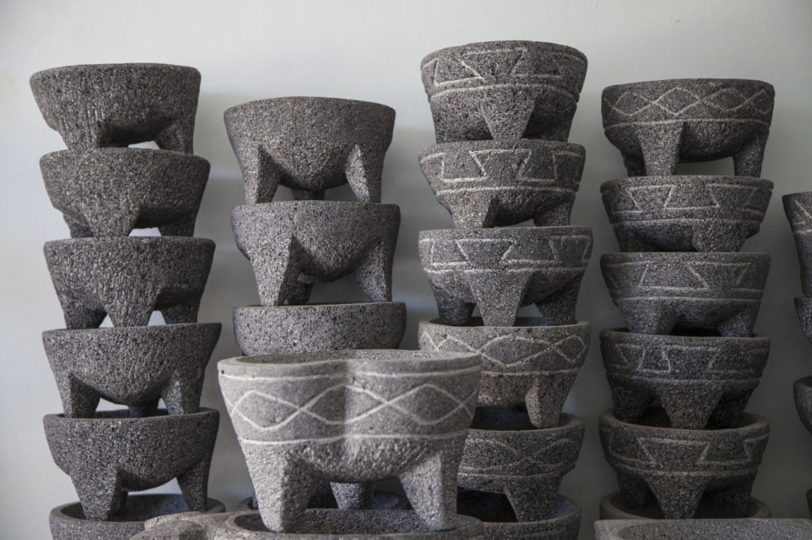
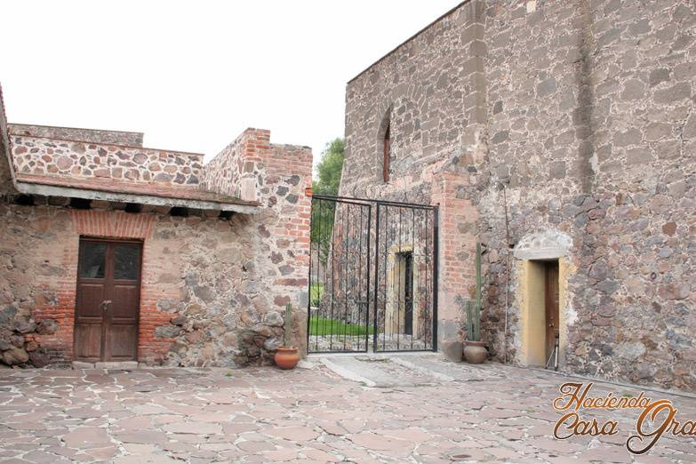
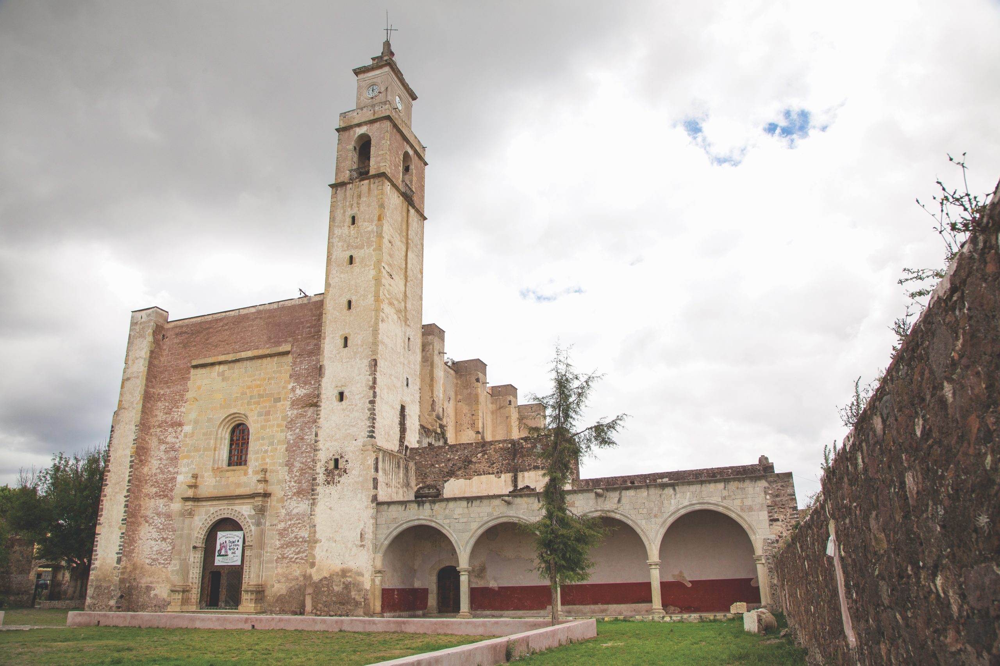
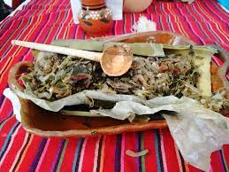
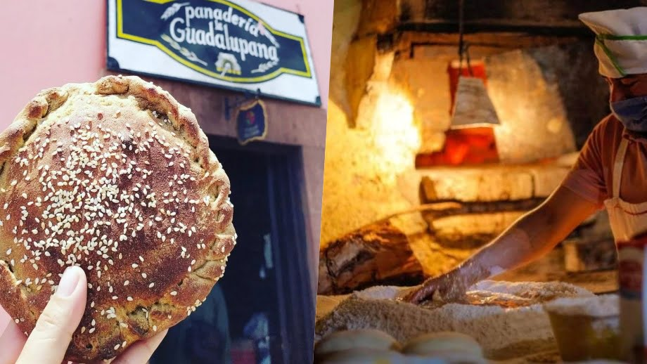
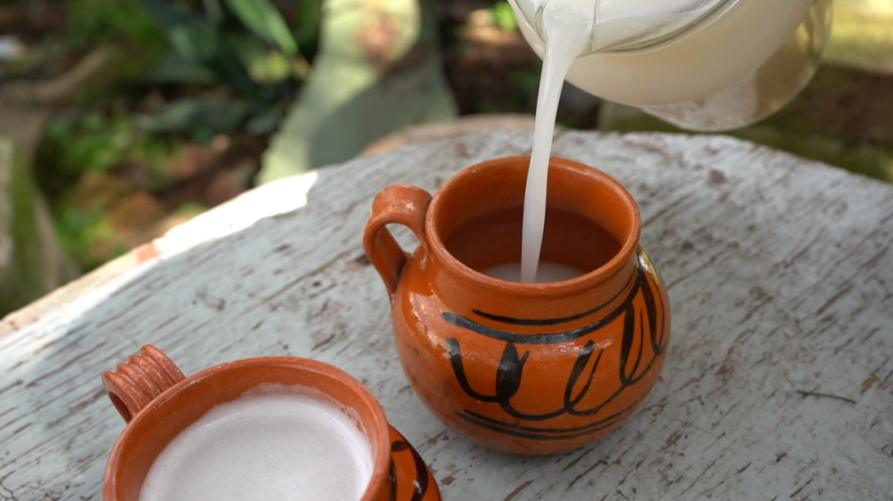

ARTESANIAS
En este Pueblo Mágico puedes encontrar algunas piezas de barro como cazuelas, ollas y cántaros, así como molcajetes, aquí se realizan prendas con hermosos bordados como vestidos, blusas y cinturones.





ACTRACTIVOS
-El Acueducto
El Acueducto del Padre Tembleque, sitio declarado Patrimonio Cultural de la Humanidad por la UNESCO en 2017, con sus 48 km de largo representa una obra maestra del ingenio creativo de la humanidad.
-Plaza Central
Destaca su kiosco y el monumento La Picota cuya función era la de aplicar castigo público a los infractores, y consiste en columna de piedra de casi 5m de altura, con figuras de jaguares en su base y en su corona un capitel con leones.
-La Hacienda Casa Grande
construida en 1860 por don Cesáreo Enciso y que su interior semeja un hermoso museo con piezas que provienen de varios siglos atrás.
-Ex Convento de Todos los Santos
fundado en 1570-1580 por Frailes Franciscanos con una sobria fachada de estilo plateresco, y que en su el interior posee pinturas bíblicas junto al altar principal.
GASTRONOMIA
-Ximbote
elaborado en una penca de maguey rellena de carne de cerdo, pollo, chinicuiles, escamoles o caracoles, que dejarán al paladar un sabor único.
-La Guadalupana
esta considerada como atractivo turístico imperdible de Zempoala. Es una panadería que tiene más de 70 años produciendo panes dulces que arrancan suspiros como el cocol o pan de burra (de piloncillo relleno con queso preparado en el horno con leña de pirul).
-Pulque
pciones que van desde aguas frescas o un buen café de olla, hasta un pulque o una cerveza artesanal.


